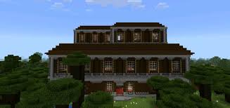

Dark oak
Home
Acacia
Birch
The Nether
Oak
Dark Oak Wood
Dark oak is found in roofed forrests along with giant mushrooms
It is the main block type found in the woodland mansion as shown below

The evoker in the woodland mansion can summon vexes